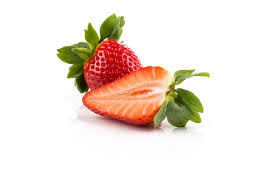

Volume: 150-250 cubic cm


| Name | Weight/Volume | Description | Ingredients | Image |
|---|---|---|---|---|
| Apples | Weight: 4-6 ounces Volume: 150-250 cubic cm |
Apples a type of pome fruit, fleshy, edible core that contains seeds. The skin is typically smooth and waxy, with different kind of colors like red, gree, and yellow, sometimes there is purple. The flesh of an apple is frim and crisp. | Water(85%), Carbohydrates, Fiber, Vitamins, Minerals, Antioxidants. | |
| Asparagus | 1 pound | Its a perennial flowering plant with edible shoots known as spears. It is 6-8 inches long, with pointed tip and slightly woody base. They are usually green but there are also white and purple varieties. | Water(93%), Carbohydrates, Fiber, Vitamins, Minerals, Antioxidants. | |
| Blueberries | Cup of Blueberries: 5-6 ounces | Blueberries are small, round berries known for its blue color and sweet taste. It grows on low-lying shrubs. They have a smooth, waxy skin that ranges in color from deep blue to purple. It is juicy and soft, with a sweet and slightly tart flavor. | Water(84%), Carbohydrates, Fiber, Vitamins, Minerals, Antioxidants. | |
| Carrots | 2 ounces | Its root vegetables that grows underground. The color of carrots is typically orange but there are some colors of carrots that exist such yellow, red, and white. The shape od carrots is long and slender to short and thick. | Water(88%), Carbohydrates, Fiber, Vitamins, Minerals, Antioxidants.< | |
| Chinese Cabbages | 1-2 pounds | Also known as Napa cabbage, a leafy green vegetable commonly used in Asian. Its an oblong shape with tightly [acked, crinkly, pale green leaves and a white stalk. The leaves are tender and smooth, while the stems are crisp and crunchy. | Water(95%), Carbohydrates, Fiber, Vitamins, Minerals, Antioxidants.< | |
| Dragon Fruits | 300-650 grams | Also known as pitaya or strawberry pear, is a vibrant tropical fruit that's gaining popularity worlwide. It grows like a climbing cactus and has a distinctive appearance. The skin is red or pink but sometimes white, its flesh is pink or red but sometimes white, yellow. | Water(85%), Carbohydrates, Fiber, Vitamins, Minerals, Antioxidants. | |
| Eggplants | 1 pound | Also known as aubergrine or brinjal, a popular vegetable with a unique flavor and texture. It grows like a vine-like plant, a color of this vegetable is deep purple to white. the flesh is firm and white, and slightly spongy texture. | Water(92%), Carbohydrates, Fiber, Vitamins, Minerals, Antioxidants.< | |
| Kiwi | 75-80 grams | Its a popular fruit known for its tangy, sweet flavor and vibrant green flesh. Its an oval-shaped berries with fuzzy brown skin and a bright green flesh. The flesh contains numerous small, black, edible seeds that add slight crunch. | Water(84%), Carbohydrates, Fiber, Vitamins, Minerals, Antioxidants.< | |
| Spinach | Cup of raw spinach: 30 grams | Its a flowering plant with broad, flat, dark green leaves. The leaves are typically smooth or slightly crinkled, depending on the variety. Its flavor is mild, slightly earthy and bitter. | Water(92%), Carbohydrates, Fiber, Vitamins, Minerals, Antioxidants.< | |
| Straberries | 12 grams | Its a heart-shaped berries with a bright red color and smooth shiny surface. They are covered with small, yellow seeds that is edible. It is frime and juicy with seet and slight tart flavor. | Water(91%), Carbohydrates, Fiber, Vitamins, Minerals, Antioxidants.< |  |